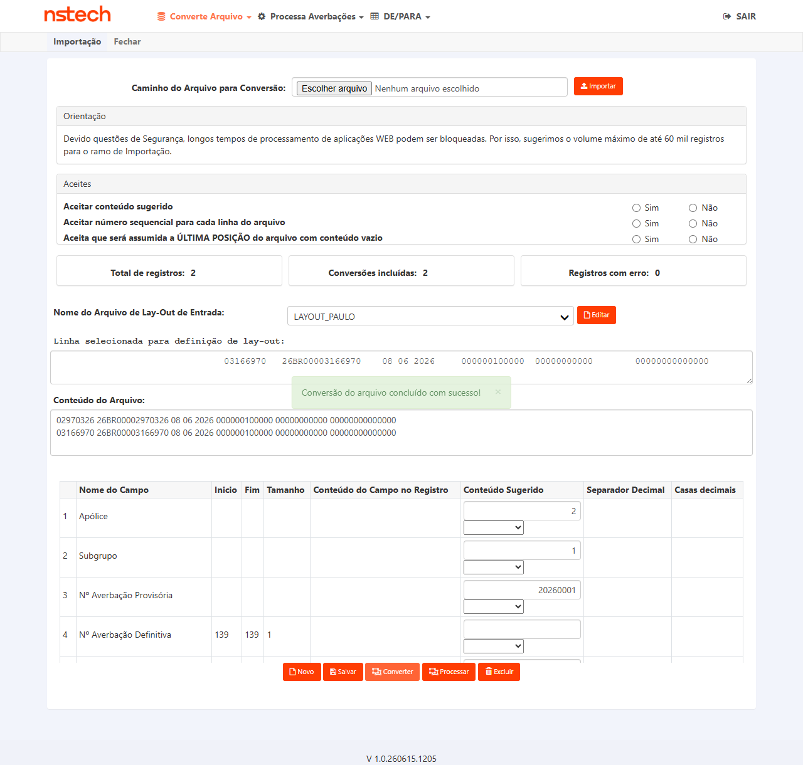
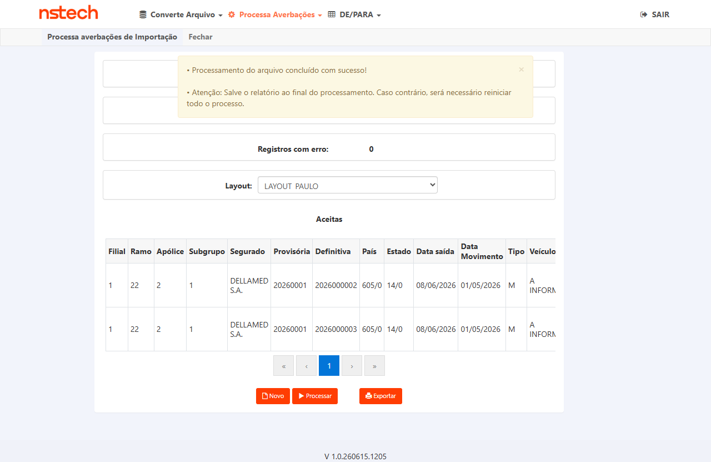

Progresso da execução
| Card | PBI-7221 — [EXT]CONVERSOR IMPORTAÇÃO |
| Seguradora | EZZE · Ambiente HML |
| URL EZZE HML | https://ezze-hml-faturamento.nsseg.com.br/login/ |
| Credenciais | ROT_AUTO / T7Jjm6xF |
| Versão testada | V 1.0.260610.1637 (André, 11/06) · Reteste: versão atual HML |
| Apólice massa | Apólice 2 · Subgrupo 1 · Segurado DELLAMED S.A. |
| Layout conversor | LAYOUT_PAULO · Layout ID: CIT-AVB-IMP |
| Arquivo massa | massa-duimp-layout-paulo.txt · 2 DIs · formato: pos 33-40 DI numérico + pos 44-58 DUIMP |
| DIs testados | 02970326 → DUIMP 26BR00002970326 | 03166970 → DUIMP 26BR00003166970 |
| Sprint | Sprint_8_Sustentacao · CITWEB\Sustentacao CITWEB |
u_avb_dfv 2026000002 e 2026000003) removidas de tb_mov_avb_int_cit em 17/06/2026 (banco smt-hom-citweb-ezze). Provisória 20260001 mantida em tb_avb_prv_cit. CTs 001–003 bloqueados anteriormente por DI duplicada — retestáveis após limpeza.
Contexto
Reteste do CA principal: arquivo com DUIMP em formato correto (DI numérico nas pos. 33–40 + DUIMP completo nas pos. 44–58) deve ser convertido e processado sem erro genérico. A falha original (DI já cadastrada) foi devida a execução anterior de PAULO em 08/06 — registros deletados em 17/06.
Pré-condições
- EZZE HML acessível:
https://ezze-hml-faturamento.nsseg.com.br/login/ - Login com
ROT_AUTO/T7Jjm6xF - Arquivo
massa-duimp-layout-paulo.txtdisponível localmente (2 linhas: DI 02970326 + 03166970) - Averbações definitivas duplicadas removidas do banco ✓ (17/06/2026)
Dados de entrada
- Arquivo:
massa-duimp-layout-paulo.txt - Layout: LAYOUT_PAULO
- DI 1:
02970326· DUIMP:26BR00002970326 - DI 2:
03166970· DUIMP:26BR00003166970
Passos
- Login no EZZE HML com
ROT_AUTO / T7Jjm6xF→ confirmar menu superior visível - Menu superior: Internacional → Conversor de Arquivos → Converte Arquivo → Importação
- Campo Apólice:
2· Subgrupo:1(ou conforme tela) - Selecionar arquivo:
massa-duimp-layout-paulo.txtvia botão Upload/Procurar - Selecionar Layout: LAYOUT_PAULO
- Clicar em Converter → aguardar resultado
- [EV1] Screenshot: resultado da Converter — verificar "X total / Y incluídas / 0 erros"
- Menu: Conversor de Arquivos → Processa Averbações → Importação
- Selecionar Layout: LAYOUT_PAULO → clicar Processar
- [EV2] Screenshot: resultado do Processar — verificar "averbações incluídas > 0"
- [EV3] Verificar que mensagem NÃO é "Ocorreu um erro inesperado!" e NÃO é "DI já cadastrada"
Resultado esperado
- Converter: 2 total / 2 incluídas / 0 erros
- Processar: averbações incluídas ≥ 1, sem erro genérico, sem "DI já cadastrada"
- Mensagem de sucesso específica exibida pelo sistema
Converter: 2 total / 2 incluídas / 0 erros · Processar: 2 averbações incluídas / 0 erros
Averbações criadas:
2026000002 e 2026000003 · sem erro genérico · sem "DI já cadastrada"Evidências

EV1 — Converter: 2 total / 2 incluídas / 0 erros · LAYOUT_PAULO · 18/06/2026

EV2 — Processar: "Processamento do arquivo concluído com sucesso!" · 2 averbações incluídas · 0 erros
Contexto
Após CT-001 aprovado, verificar que o campo DUIMP (t_obs) foi armazenado em formato completo na averbação criada. O CA exige que "26BR00002970326" apareça integralmente, não truncado. Bloqueado anteriormente por cascata de CT-001.
Pré-condições
- CT-CNV-IMP-001 aprovado (averbação processada com DUIMP 26BR00002970326)
- Usuário logado como
ROT_AUTO
Passos
- Após CT-001 aprovado, anotar o número da averbação definitiva criada
- Consultar a averbação: Internacional → Averbação → Importação → Definitiva
- Pesquisar pela apólice
2/ subgrupo1 - [EV1] Screenshot: localizar averbação criada no CT-001 na lista/grid
- Abrir a averbação → localizar campo Observações / DUIMP
- [EV2] Screenshot: campo DUIMP / Observações com valor completo visível (
26BR00002970326) - Verificar via banco:
SELECT t_obs, u_di FROM tb_mov_avb_int_cit WHERE u_apo_pnc=2 AND c_org_prd=1 ORDER BY u_avb_dfv DESC
Resultado esperado
- Campo Observações / DUIMP exibe:
26BR00002970326(15 chars, formato completo) u_dicontém:02970326t_obscontém:26BR00002970326(não truncado)
Confirmado via banco:
t_obs = 26BR00002970326 (averbação 2026000002) e t_obs = 26BR00003166970 (averbação 2026000003)Campo
u_di: 02970326 e 03166970 — DUIMPs armazenados sem truncamentoEvidências

EV1 — Processar mostrando averbações 2026000002 e 2026000003 incluídas com DUIMPs da massa · Confirmado via DB: SELECT t_obs, u_di FROM tb_mov_avb_int_cit WHERE u_avb_dfv IN (2026000002, 2026000003)
Contexto
Valida o cenário exato descrito no card: DUIMPs 26BR00002970326 e 26BR00003166970 sendo processados com sucesso. Na execução anterior (André, 11/06), a conversão passou (2/2) mas o Processar falhou por DI duplicada. Após remoção dos registros duplicados, ambos os DUIMPs devem ser processados com averbações incluídas.
Pré-condições
- Banco limpo: DIs 02970326 e 03166970 não existem em
tb_mov_avb_int_cit✓ (verificado 17/06) - Arquivo
massa-duimp-layout-paulo.txtcom ambos os DUIMPs - Apólice 2 / subgrupo 1 / segurado DELLAMED S.A.
Passos
- Login
ROT_AUTO→ EZZE HML - Internacional → Conversor de Arquivos → Converte Arquivo → Importação
- Upload:
massa-duimp-layout-paulo.txt(2 linhas: DI 02970326 + 03166970) - Layout: LAYOUT_PAULO → Converter
- [EV1] Screenshot: "2 total / 2 incluídas / 0 erros" na conversão
- Processa Averbações → Importação → LAYOUT_PAULO → Processar
- [EV2] Screenshot: resultado Processar — "incluídas = 2 / erros = 0"
- [EV3] Screenshot: averbações listadas na tela (grid com ambas as DIs)
Resultado esperado
- Conversão: 2 total / 2 incluídas / 0 erros
- Processar: 2 incluídas / 0 erros
- Ambos os DUIMPs (26BR00002970326 e 26BR00003166970) constam na listagem de averbações
- Sem mensagem "Ocorreu um erro inesperado!" em nenhuma etapa
DUIMP 26BR00002970326 → averbação 2026000002 · DUIMP 26BR00003166970 → averbação 2026000003
Processar: 2 incluídas / 0 erros · Sem "Ocorreu um erro inesperado!" em nenhuma etapa
Evidências

EV1 — Processar: "Processamento concluído com sucesso!" · Aceitas: averbação 2026000002 (DI 02970326) + 2026000003 (DI 03166970) · 2 incluídas / 0 erros
Cenário
Valida que o formato correto do arquivo (DI numérica nas pos. 33–40 + DUIMP completo em Observações nas pos. 44–58) é aceito pelo Converter sem rejeição de linhas.
Resultado obtido (André, 11/06)
Cenário
Valida que quando a DI já está cadastrada, o sistema exibe mensagem específica ("DI já cadastrada na averbação X") em vez do erro genérico "Ocorreu um erro inesperado!".
Resultado obtido (André, 11/06)
Cenário
Valida que o conversor funciona quando o campo Observações (pos. 44–58) está vazio — DI numérica sem DUIMP. O workaround de duas colunas não é mais necessário.
Resultado obtido (André, 11/06)
Cenário
Valida os contadores exibidos após Converter: "X total / 0 incluídas / 0 erros" (dados aguardando Processar) conforme comportamento esperado do sistema.